Maqueta sobre una mesa
Se arrastra el poste a lo largo de la orilla y se comparan x, y, la longitud del tendido y el costo, con el gráfico de C(x) al lado.
Abrir la maquetaProblemas de Cálculo en una variable construidos como escenas WebXR para Meta Quest 3 y para el navegador de escritorio. En cada uno se ve la función objetivo o la relación entre las razones de cambio, y se mueve la variable o el tiempo para observar cómo cambian las magnitudes del problema.
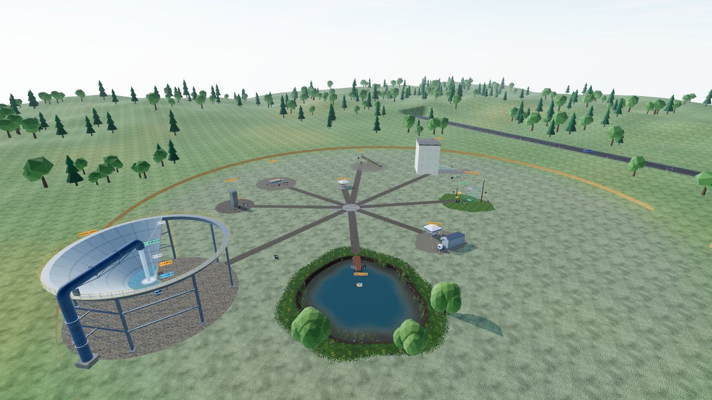
Guía 4 · Optimización y razón de cambio
Once estaciones en un mismo mundo, una por cada problema de la guía cuyo contexto se puede representar a escala real, dentro de una obra con sus alrededores. Se recorre caminando o con el menú de estaciones.
Entrar a DeriVR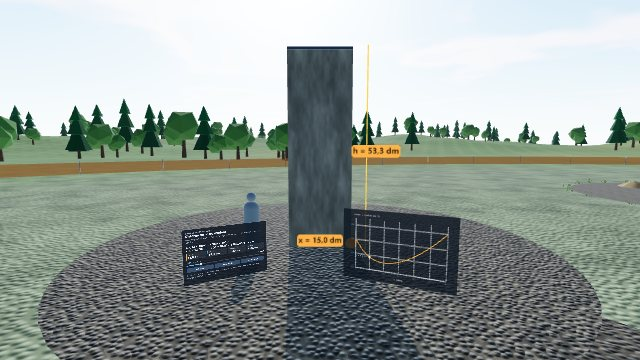
Cisterna de costo mínimoEjemplo 3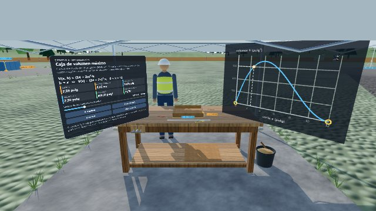
Caja de volumen máximoEjemplo 4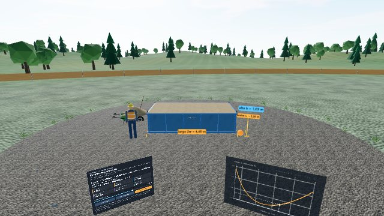
Recipiente para arenaEjercicio 1.5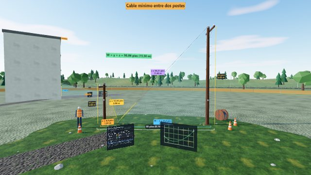
Cable mínimo entre dos postesEjercicio 1.6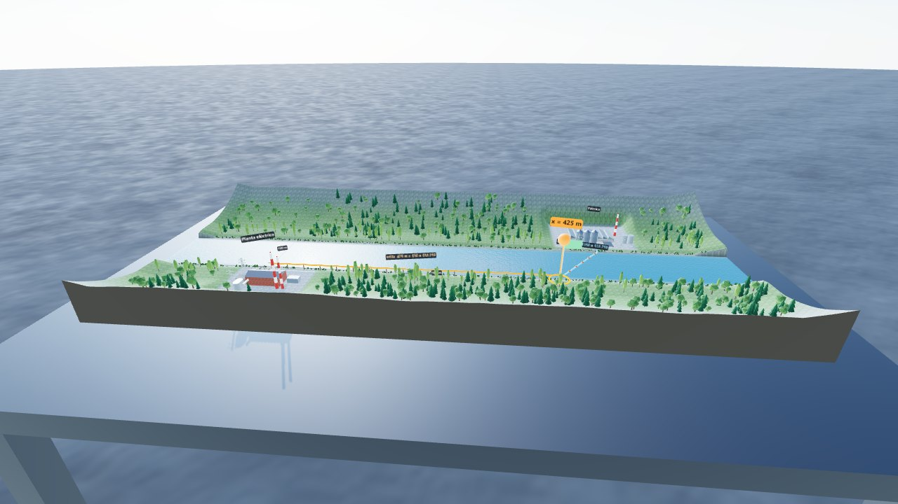
Río y cableEjercicio 1.7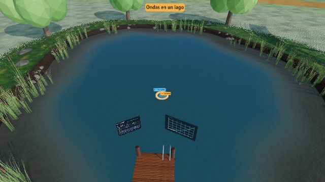
Ondas en un lagoEjemplo 6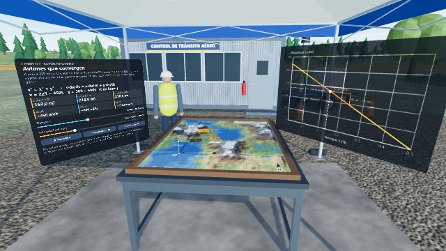
Aviones que convergenEjemplo 7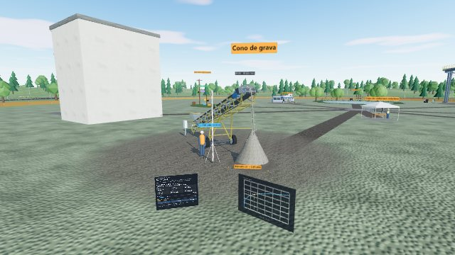
Cono de gravaEjemplo 8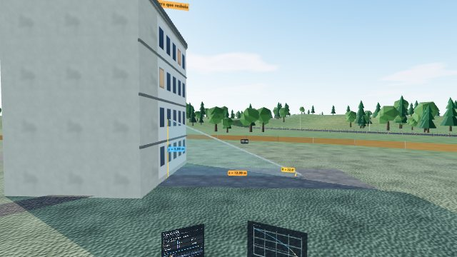
Escalera que resbalaEjercicio 2.2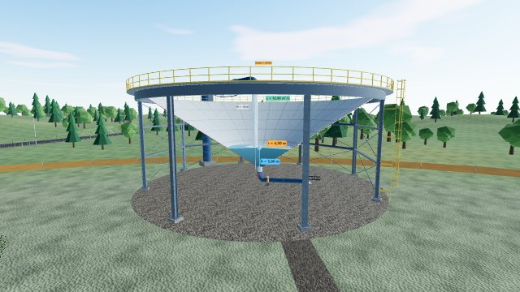
Depósito cónicoEjercicio 2.4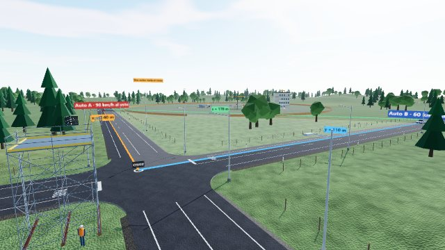
Dos autos hacia el cruceEjercicio 2.5Qué problemas de la guía se modelan, cuáles no y por qué, junto con los modelos y las respuestas, está en docs/guia4.md.
Un río rectilíneo de 100 m separa una planta eléctrica de una fábrica ubicada 500 m río arriba, en la orilla opuesta. Tender el cable por la orilla cuesta $90 por metro y sobre el agua $150 por metro. ¿Cuál es la longitud del tendido más económico?
C(x, y) = 90x + 150y, con y = √((500 − x)² + 100²) y 0 ≤ x ≤ 500
Se arrastra el poste a lo largo de la orilla y se comparan x, y, la longitud del tendido y el costo, con el gráfico de C(x) al lado.
Abrir la maqueta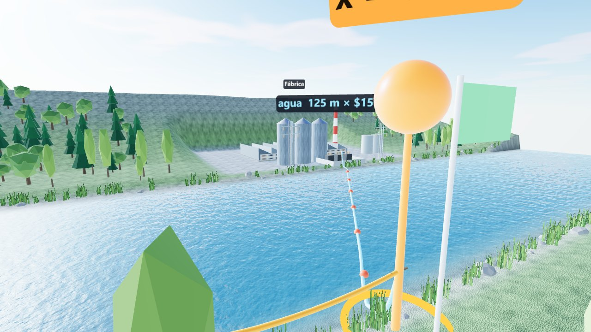
Desde la maqueta, el botón «Ir a escala real» lleva al valle: se camina junto al río, con la planta y la fábrica a 500 m, y se ve el cable sobre la orilla y sobre el agua.
Ir a la estación del ríoLas fórmulas, la solución y las comprobaciones del río están en docs/modelo.md.
Código con licencia MIT. Una vez cargadas, las escenas funcionan sin conexión, salvo la narración, que se descarga al llegar a cada estación. No recoge datos de quien lo usa. Hecho con three.js. © 2026 Claudio Fuentealba, Universidad Austral de Chile.